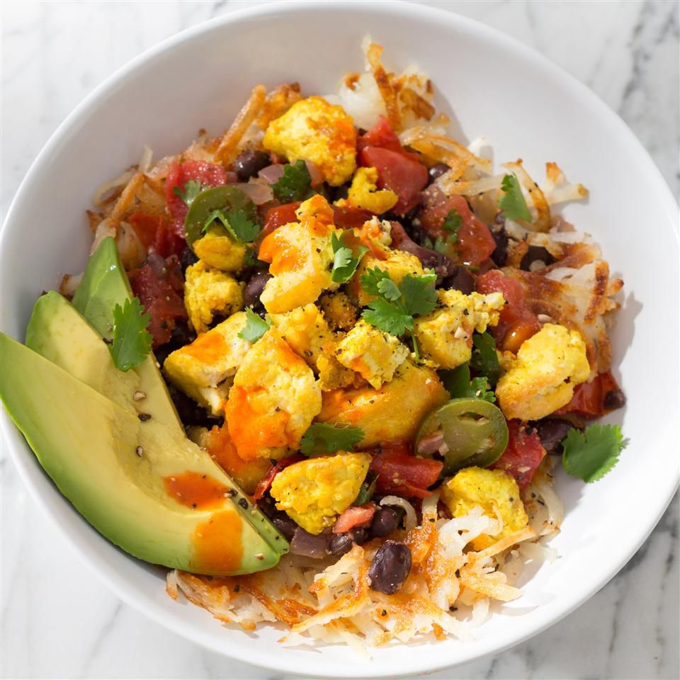

Home
Tofu Burrito Bowl

Tofu Burrito Bowl!
Enjoy this as a healthy low cholesterol, low fat breakfast option that should still allow you to hit all your high protein macro needs.
This recipe and all of the information on this page, belong to a third party. The original recipe, as well as all of this material, is from allrecipes.com, and is only being used for educational purposes.
Ingredients:
- 3 tablespoons olive oil, divided
- 1 (14 ounce) package extra-firm tofu, drained
- ½ teaspoon salt
- black pepper to taste
- 1 ½ teaspoons onion powder
- 1 ½ teaspoons garlic powder
- ½ teaspoon ground turmeric
- 1 tablespoon fresh lemon juice
- 1 tablespoon olive oil
- 1 cup finely diced red onion
- 2 jalapeno peppers, seeded and chopped
- ½ teaspoon salt
- 3 cloves garlic, minced
- 2 cups chopped tomatoes
- 1 ½ teaspoons cumin
- ¼ cup chopped fresh cilantro
- 1 tablespoon fresh lemon juice
- 1 (15.5 ounce) can no-salt-added black beans, drained and rinsed
- 1 ½ cups cooked hash brown potatoes
- 1 avocado - peeled, pitted and sliced
- 1 teaspoon fresh lemon juice
- ¼ cup chopped fresh cilantro
- 1 teaspoon hot sauce, or to taste
Steps
- Preheat a large, heavy skillet over medium-high heat. Add 2 tablespoons oil. Break tofu apart over skillet into bite-size pieces, sprinkle with salt and pepper, then cook, stirring frequently with a thin metal spatula, until liquid cooks out and tofu browns, about 10 minutes. (If you notice liquid collecting in pan, increase heat to evaporate water.) Be sure to get under the tofu when you stir, scraping the bottom of the pan where the good, crispy stuff is and keeping it from sticking.
- Add onion and garlic powders, turmeric, juice, and remaining tablespoon oil and toss to coat. Cook 5 minutes more.
- Preheat a heavy-bottomed saucepan over medium-high heat. Add oil. Cook onion and jalapenos with a pinch of salt, stirring, until translucent, about 5 minutes, Add garlic and cook, stirring, until fragrant, about 30 seconds. Add tomatoes, cumin, and remaining salt, and cook, stirring, until tomatoes become saucy, about 5 minutes. Add cilantro and lemon juice. Let cilantro wilt in. Add beans and heat through, stirring occasionally, about 2 minutes. Taste for salt and seasoning.
- Spoon some hash browns into each bowl, followed by a scoop of beans and a scoop of scramble. Top with avocado, a squeeze of fresh lemon juice, and a sprinkle of cilantro. Serve with hot sauce.